Keynote at COP28
Spoke at Symphony of the Future, standing with 20 children from climate-vulnerable communities.
Student, founder, podcaster and author. Alana explains climate change in words children understand, then gives them something to do about it.
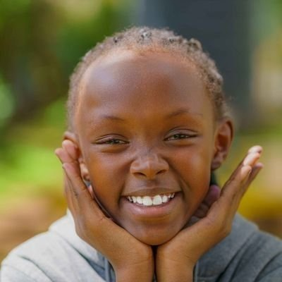
Alana Nicky Chelangat is a Kenyan student and climate justice advocate who believes children belong at the centre of the decisions that shape their future.
She founded Dunia Endelevu, a platform where children and young people learn about climate change and take action. She hosts Climate Gumzo with Alana, a podcast that turns big ideas into language young listeners understand. And she writes the Climate Action Adventure Series, stories that make conservation feel like an adventure. Back home, she helps lead a tree nursery that has grown to more than 20,000 trees.
She has carried children’s voices onto the world stage: a keynote at COP28 in Dubai, a panel on children’s rights at COP29 in Baku, and a keynote at the International Conference on Child Protection in Africa. She also advises University College Cork’s Youth Climate Justice research as a member of its Young Advisory Team.
“Kids need to understand what’s happening to our planet. When they understand, they can act.”
From a school tree nursery to the world’s biggest climate stages, in just a few years.
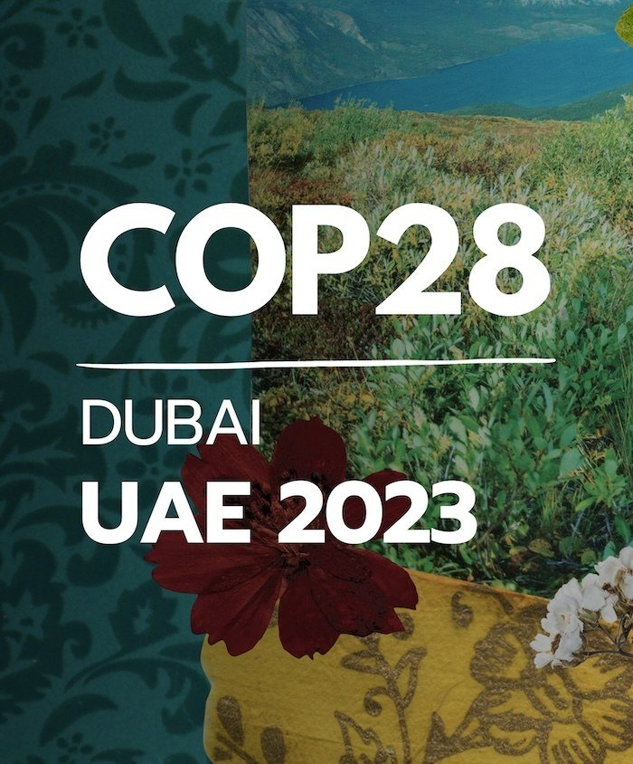
Spoke at Symphony of the Future, standing with 20 children from climate-vulnerable communities.
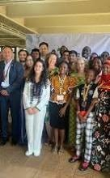
Helped shape a Global Youth Declaration on Environment for UNEA-6.
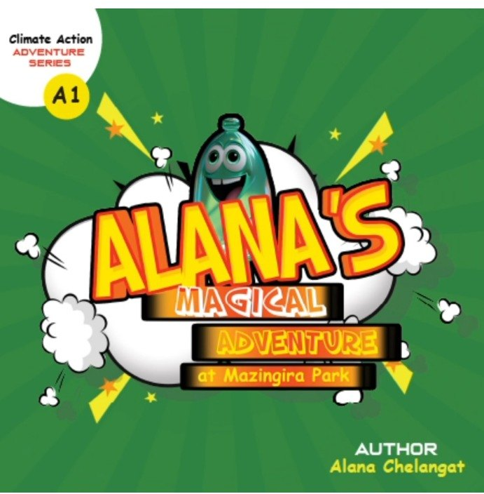
Alana’s Magical Adventure at Mazingira Park opens the Climate Action Adventure Series.
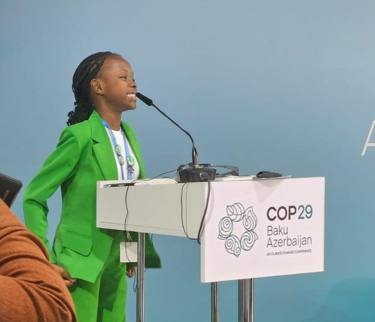
Spoke on children’s rights in climate action and made page 3 of The Standard.
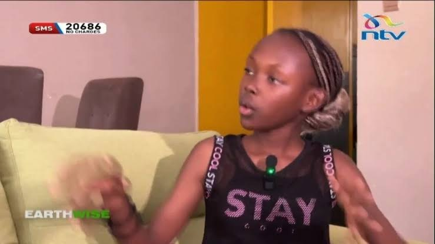
Featured on TV47’s Spotlight, with interviews on KTN, NTV and Citizen TV.
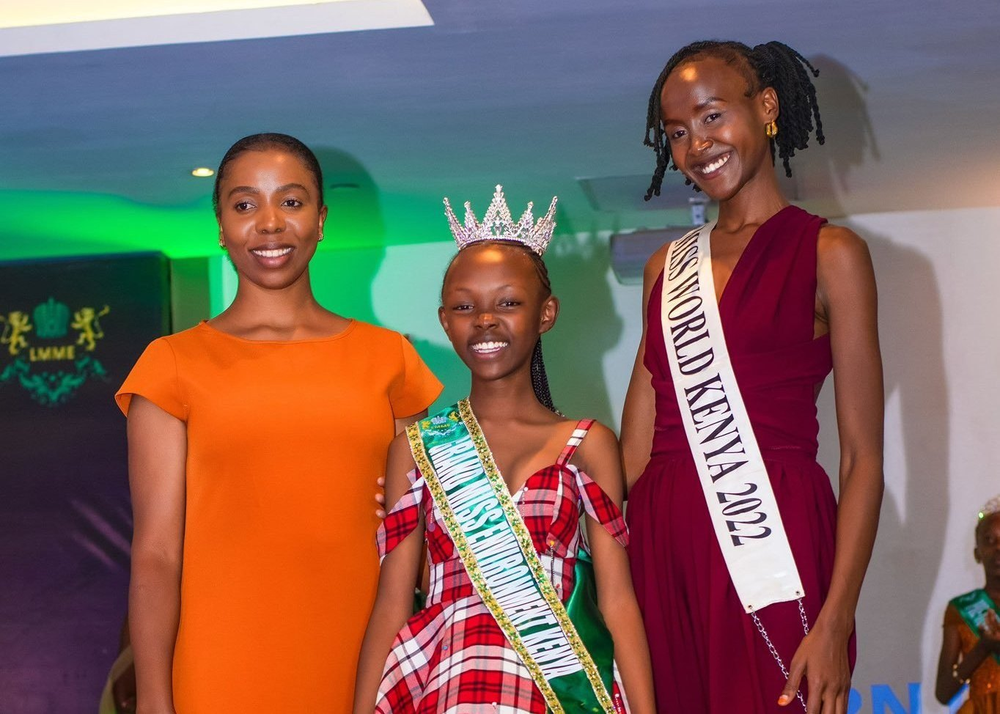
Won the title at the fifth edition of Little Mister and Miss Environment Kenya.
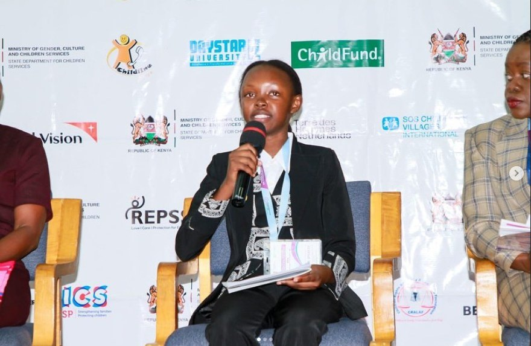
Called for a Child Protection and Climate Finance Compact at the 3rd International Conference on Child Protection in Africa.
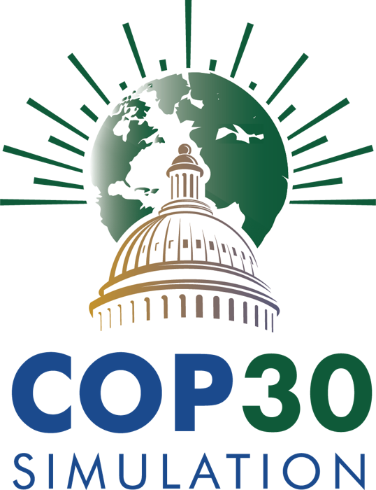
COP30 SIMCompleted a full simulation of the COP30 climate negotiations.
Each project carries a Kiswahili name, so the message starts close to home.
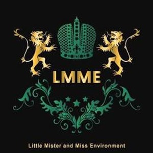
Little Miss Environment Kenya 2025Little Mister & Miss Environment Kenya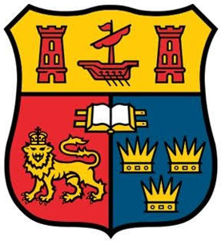
Young AdvisorYouth Climate Justice, University College Cork, Ireland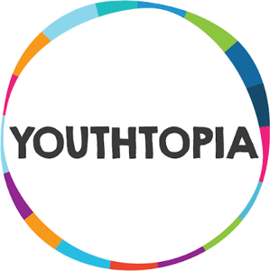
Member, Circle of YouthYOUTHTOPIA, a global learning community for young changemakers